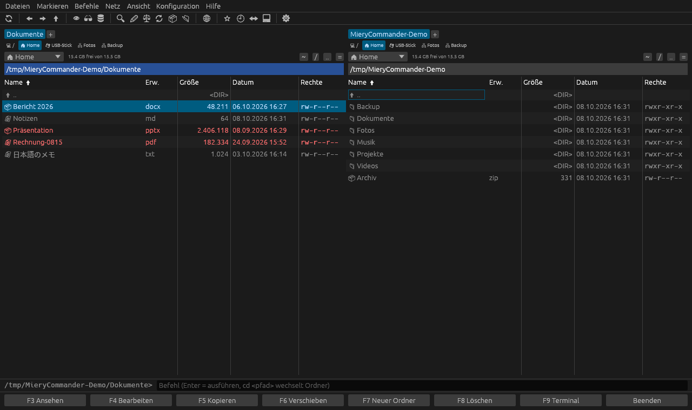
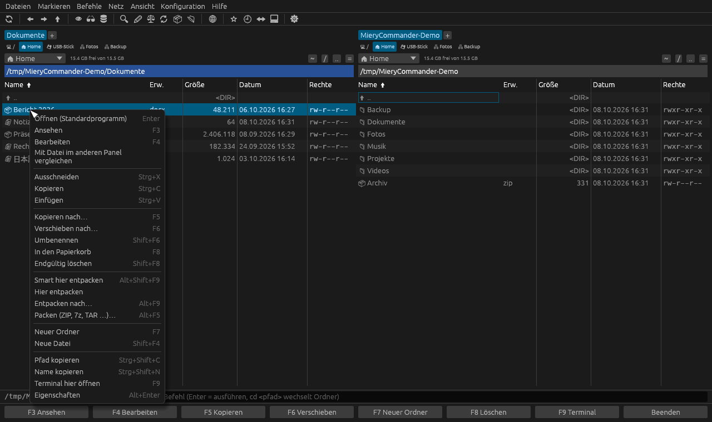
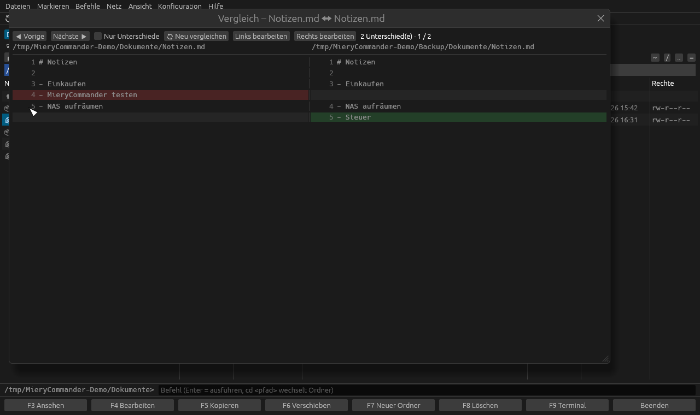
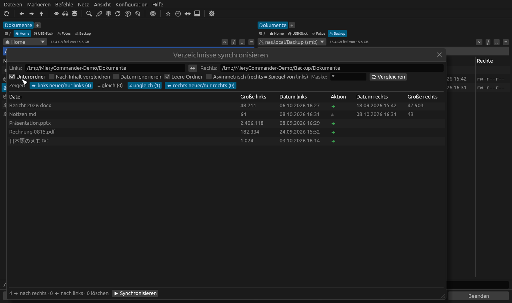
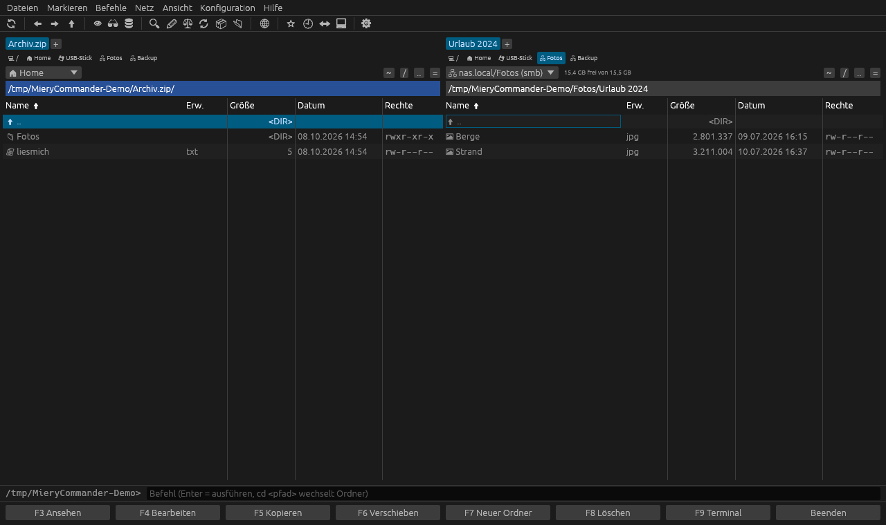
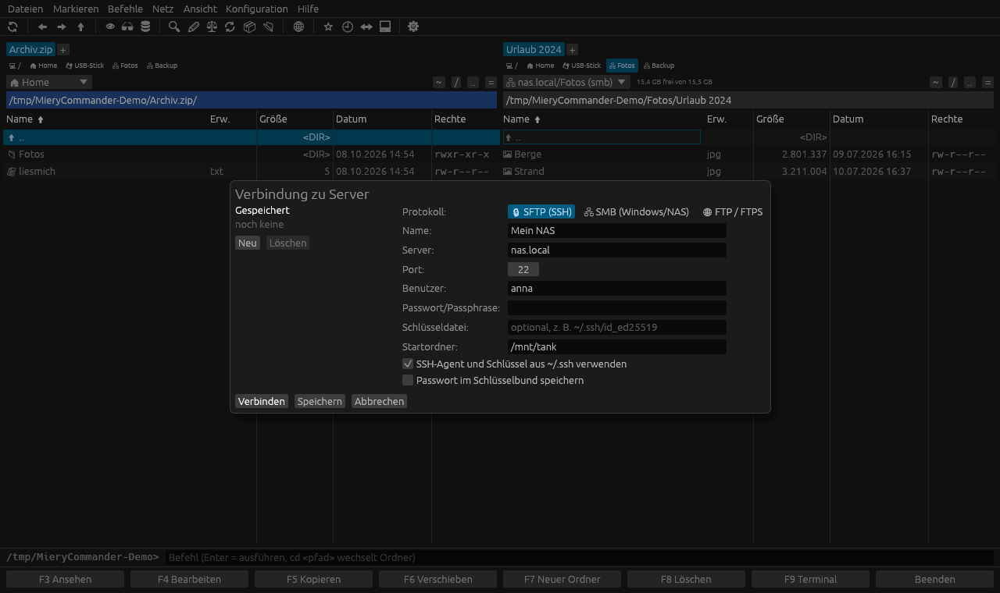

MieryCommander
Ein schneller, zweispaltiger Dateimanager – geschrieben in Rust, für Linux und macOS.

Funktionen
Alles, was man von einem Commander erwartet – mit der Tastatur genauso bedienbar wie mit der Maus.
🗂️ Zwei Panels & Tabs
F-Tasten-Leiste, Tabs, Laufwerksleiste, Schnellsuche durch Lostippen, Schnellfilter, Favoriten und Verlauf.
📦 Archive wie Ordner
ZIP, 7z, RAR, TAR (gz/bz2/xz/zst) öffnen, ansehen, herauskopieren – Packen in 7 Formaten, „Smart entpacken“ mit eigenem Ordner.
🌐 Netzwerk
Eingebauter SFTP-, FTP- und FTPS-Client, SMB-Freigaben, Netzlaufwerke in der Laufwerksleiste, Passwörter im System-Schlüsselbund.
🔃 Synchronisieren
Verzeichnisse nach Datum oder Inhalt abgleichen, Aktion pro Datei wählen, Spiegel-Modus, leere Ordner inklusive.
⚖️ Dateien vergleichen
Zwei Dateien nebeneinander mit farbigen Unterschieden bis in die Zeile hinein; Binärdateien byteweise.
✏️ Mehrfach-Umbenennen
Masken wie [N], [C], [Y][M][D], Suchen & Ersetzen mit regulären Ausdrücken und Live-Vorschau.
📋 Zwischenablage
Strg+C / X / V für Dateien – auch mit Dolphin, Nautilus & Co. und zwischen Servern und Archiven.
🔍 Suchen & Ansehen
Dateisuche mit Wildcards, RegEx und Textinhalt; Lister für Text, Hex und Bilder, Schnellansicht, Branch-View.
⚡ Bleibt bedienbar
Alles läuft im Hintergrund mit Fortschritt – ein hängendes Netzlaufwerk friert die Oberfläche nicht ein.
Screenshots
Zum Vergrößern anklicken.





Installation
MieryCommander wird aus dem Quellcode gebaut. Du brauchst Rust (z. B. über rustup.rs oder Homebrew) und Git.
Linux
git clone https://github.com/Evil8810/MieryCommander.git cd MieryCommander cargo run --release
Ins Startmenü eintragen (mit Icon, ohne sudo):
./install-desktop.sh
macOS
brew install rust git clone https://github.com/Evil8810/MieryCommander.git cd MieryCommander cargo run --release
Auf Mac-Tastaturen die F-Tasten mit fn drücken oder die Leiste unten benutzen; Strg-Kürzel sind dort Cmd-Kürzel.
Wichtige Tastenkürzel
| Tab | Panel wechseln |
| F3 / F4 | Ansehen / Bearbeiten |
| F5 / F6 | Kopieren / Verschieben |
| F7 / F8 | Neuer Ordner / Löschen |
| Einfg Leertaste | Markieren |
| Strg+C/X/V | Kopieren / Ausschneiden / Einfügen |
| Alt+F5 / Alt+F9 | Packen / Entpacken |
| Alt+F7 | Dateien suchen |
| Strg+F | Mit Server verbinden (SFTP/FTP/SMB) |
| Strg+M | Mehrfach-Umbenennen |
| Strg+T / Strg+W | Neuer Tab / Tab schließen |
| Strg+G | Gleicher Ordner wie im anderen Panel |